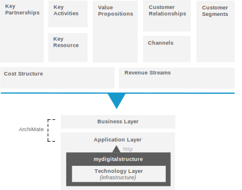

COMMUNITY
|
|
ArchiMate is an open and independent modelling language for enterprise architecture. "ArchiMate is an open and independent enterprise architecture modeling language to support the description, analysis and visualisation of architecture within and across business domains in an unambiguous way. ArchiMate offers a common language for describing the construction and operation of business processes, organisational structures, information flows, IT systems, and technical infrastructure. This is just like an architectural drawing in classical building where the architecture describes the various aspects of the construction and use of a building. This insight helps the different stakeholders to design, assess, and communicate the consequences of decisions and changes within and between these business domains." - wikipedia |
||||||
| Similar to how http is a common language for managing the state of information (as a representation of the enterprise); ArchiMate is the common language for describing the enterprise itself - including its supporting information systems . | ||||||
| LAYERS | ||||||
|
||||||
|
There are also two additional layers:
|
||||||
|
LINKING TO BUSINESS MODEL CANVAS |
||||||
| You can link your business ideas (represented in business model canvas) to your business architecture models described using ArchiMate. Tools like the open-source Archi have templates for this built in. | ||||||
|  |
| ARCHIMATE |
| Open Group & Cloud Computing |
| About ArchiMate |
| Getting Started |
| Good Practices |
| Documentation |
| TOGAF |
| UML |
| MYDIGITALSTRUCTURE |
| Model (Objects) |
| MADE |
| TOOLS (not endorsement) |
| Archi |